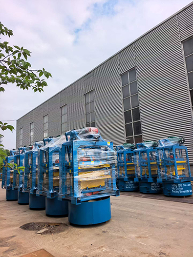
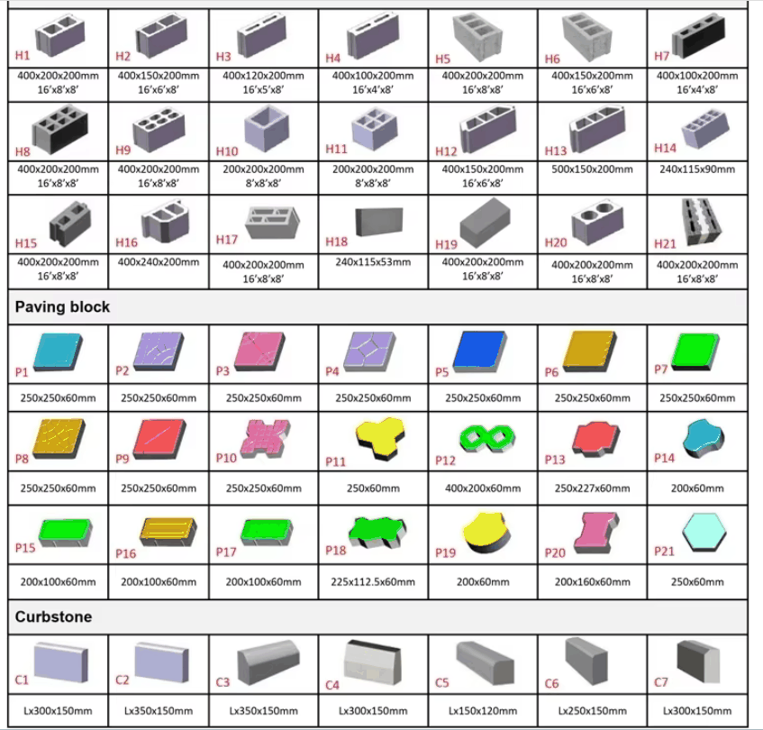
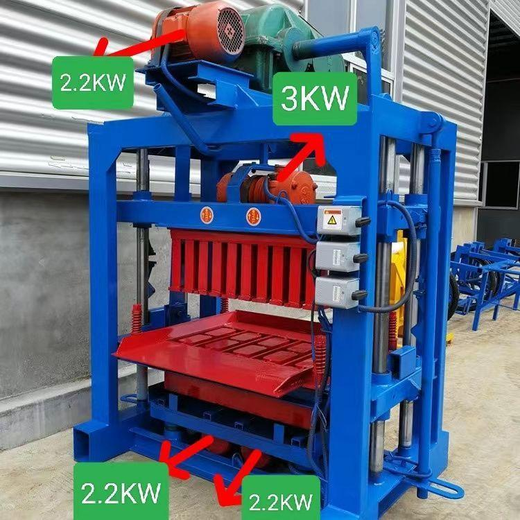
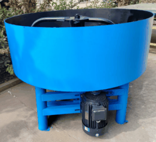
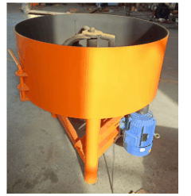
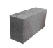
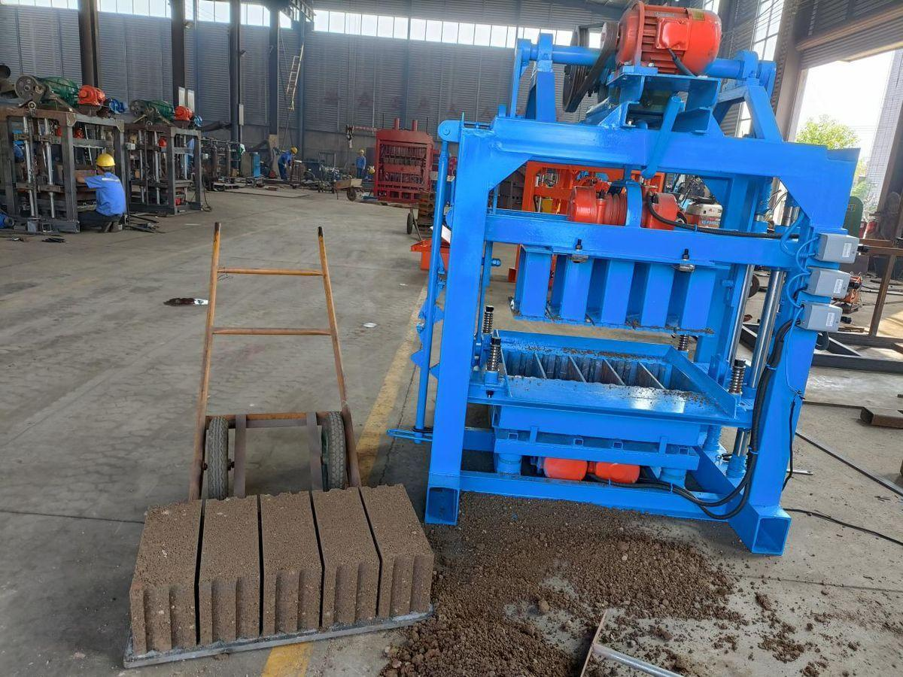
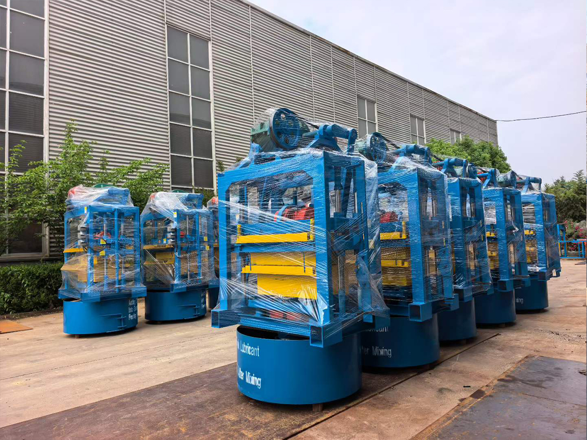
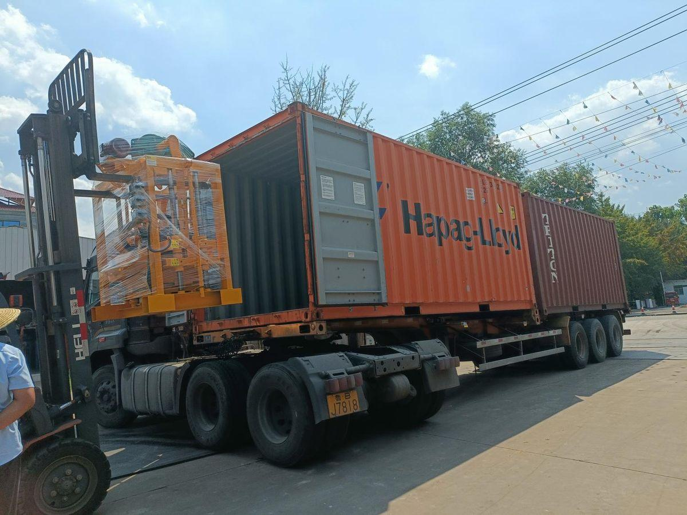

QT4-40 Mashine ya Matofali ya Nusu-Otomatiki
QT4-40 ndio mashine ya bei nafuu zaidi katika aina yetu na ndio mlango maarufu zaidi kwa wamiliki wapya wa viwanda vya matofali Afrika. Inaendeshwa kwa mkono kwa kulisha na kupanga, na mtetemo wa umeme kuminya — rahisi kuendesha, rahisi kudumisha, na imejaribiwa katika maelfu ya maeneo Nigeria, Ghana na Cameroon.

Katalogi ya Umbo la Tofali (Moldi 49 Zinapatikana)
Mashine moja, moldi 49 tofauti. Hapa chini ni katalogi kamili ya umbo la tofali: H1-H21 tofali tupu / kamili, P1-P21 pavers, C1-C7 mawe ya kingo. Moldi zote zinabadilishwa na zinaweza kuagizwa kando.

Picha ya Uchunguzi wa Kiwanda
Picha ya kumbukumbu kutoka sakafu ya kiwanda chetu — vibrators 2 za chini za 2.2 kW + 1 vibrator ya juu ya 3 kW, jumla ya 7.4 kW nguvu ya mtetemo kwa kuminya kwa nguvu:

Vipimo vya Kiufundi
① Mashine Kuu (Mwenyeji QTJ4-40)
| Kigezo | Thamani |
|---|---|
| Mfano | QTJ4-40 (jina la kuuza nje QT4-40) |
| Kiasi cha bidhaa kwa moldi | 240 × 115 × 53 mm — vipande 21 / moldi |
| Nguvu ya umeme | 9.6 kW |
| Muda wa mzunguko | Sekunde 40 – 60 |
| Uwezo wa zamu | 10,000 – 12,000 vipande / zamu ya saa 8 |
| Uzito wa mashine | 1,250 kg |
| Saizi kuu ya mwenyeji | 1,600 × 1,100 × 2,000 mm |
| Saizi ya palette | 850 × 450 × 20 mm |
② Mchanganyiko wa Pan JQ 500 (mpangilio wa kawaida)
| Kigezo | Thamani |
|---|---|
| Mfano | JQ500 — mchanganyiko wa pan wa mita 1.5 kipenyo |
| Nguvu ya umeme | 7.5 kW |
| Muda wa mzunguko | dakika 5 / batch |
| Uzito | 560 kg |
| Uwezo | L 500 kwa batch |
| Saizi kuu | 1,500 × 1,500 × 1,160 mm |
③ Mchanganyiko wa Pan JQ 350 (hiari — kwa maagizo ya bajeti ndogo)
| Kigezo | Thamani |
|---|---|
| Mfano | JQ350 — mchanganyiko wa pan wa mita 1.2 kipenyo |
| Nguvu ya umeme | 5.5 kW |
| Muda wa mzunguko | dakika 5 / batch |
| Uzito | 400 kg |
| Uwezo | L 350 kwa batch |
| Saizi kuu | 1,200 × 1,200 × 1,160 mm |
Mipangilio ya Mchanganyiko
Chaguo mbili za mchanganyiko kwa kufanana na bajeti yako. Zote zinapeleka moja kwa moja kwenye mashine kuu ya QT4-40:

JQ 500 — Kawaida

JQ 350 — Chaguo la Bajeti
Kwa Nini QT4-40 Inafanya Kazi
QTJ4-40 ni mojawapo ya mifano yetu inayouzwa zaidi, iliyoundwa kwa wamiliki wa viwanda vya kwanza vya matofali. Inaendesha kwa kupunguza aina ya 350 ya uwezo mkubwa, na sehemu zote zinazozunguka zimesasishwa kuwa vipengele vya daraja la bearing. Fremu imejengwa kwa chuma cha mraba cha viwango vya kitaifa chenye unene wa mm 5 na mstari wa ndani unaostahimili kuchakaa. Nguzo nne za mwongozo zinafunga moldi katika nafasi kamili, kikiongeza maisha ya moldi na kudumisha vipimo vya tofali thabiti.
Vibrators viwili vya chini vya 2.2 kW vinafanya kazi na vibrator ya juu ya 3 kW kutoa shinikizo la kuminya la 8 – 10 MPa kwenye tofali tupu na 10 – 12 MPa kwenye matofali kamili. Kwa kubadilisha moldi, mashine hiyo hiyo inazalisha tofali tupu, matofali kamili, pavers, matofali ya kupanda nyasi, matofali ya kinga ya mteremko, mawe ya kingo na sahani za sakafu.
Uwezo wa Uzalishaji kwa Aina ya Tofali
Uzalishaji unategemea sana saizi na umbo la moldi. Takwimu hapa chini zinatoka kwenye majaribio yetu ya kiwanda kwa saa 8 za kazi:
| Aina ya Tofali | Picha ya Tofali | Vipimo vya Tofali | Vipande kwa Moldi | Vipande kwa Siku |
|---|---|---|---|---|
| Tofali Tupu (Chaguo 1) |  | 400 × 200 × 200 mm 390 × 190 × 190 mm | 4 vipande | 2,400 - 2,800 vipande |
| Tofali Tupu (Chaguo 2) | | 400 × 150 × 200 mm 390 × 140 × 190 mm | 5 vipande | 3,000 - 3,500 vipande |
| Tofali Tupu (Chaguo 3) | | 400 × 100 × 200 mm 390 × 100 × 190 mm | 7 vipande | 4,000 - 4,800 vipande |
| Tofali la Kawaida |  | 240 × 115 × 53 mm | 21 vipande | 10,000 - 12,000 vipande |
| Tofali la Paver (Uholanzi) |  | 200 × 100 × 60mm | 14 vipande | 8,000-9,500 vipande |
| Tofali la Paver (Wimbi) |  | 225 × 112.5 × 60mm | 9 vipande | 5,500-6,500 vipande |
Kwa ombi, pia tunatoa moldi za sahani za sakafu (500 × 150 × 200 mm), matofali ya kupanda nyasi, matofali ya kinga ya mteremko, mawe ya kingo na saizi nyingine maalum. Wasiliana nasi kwa bei za moldi na muda wa kuwasilisha.
Picha Halisi za Uzalishaji


Usafirishaji & Uwasilishaji
Kifurushi cha kawaida cha QT4-40 (mashine kuu + mchanganyiko JQ 500 + moldi 1 ya ziada) inaingia katika kontena la 20 GP. Tunasafirisha kupitia Hapag-Lloyd, Maersk, au COSCO kulingana na bandari yako ya marudio. Nukuu za CIF za mlango-hadi-mlango kwa Lagos, Tema, Mombasa, Durban na Dar es Salaam zinapatikana kwa ombi.

Inafaa kwa
- Wamiliki wa viwanda vya kwanza vya matofali wenye mtaji mdogo (bajeti ya USD 3,000 – 5,000)
- Wakandarasi wanaohitaji uzalishaji wa hourdis na matofali ya mchanga mahali pa kazi
- Utengenezaji wa matofali wa rununu — QT4-40 inaweza kuhamishwa kwenye lori ndogo